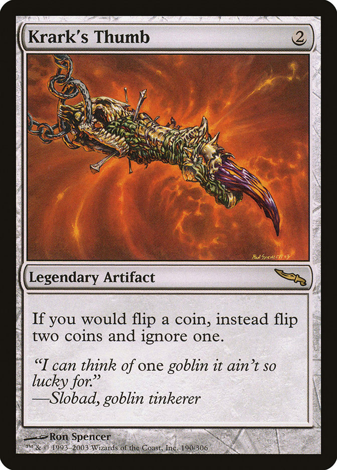

The main feature of this site is coin tossing without hussle. You specify the amount and get results, without waiting or tedious animations.
But if you activate advanced settings you can manipulate your results, simulating how card Krark's Thumb from Magic: The Gathering works.
Amount: how many coins to throw.
Settings listed below are advanced and hidden by default. Clicking on the gear in the bottom left corner makes them visible.
Krark's Thumb: how many cards named "Krark's Thumb" you have in play.
All of the parameters listed below only take effect if you have at least one "Krark's Thumb" in play.
Priority: which side to try to prioritize with "Krark's Thumb" effect. Heads or Tails.
Even spread: if True tries to even out results.
Following parameters won't allow for even spread until given thresholds are achieved.
Min priority: minimum value to try and achieve for prioritized side.
Max priority: maximum value for prioritized side. Once achieved tries to maximize secondary side.
Min parameters take priority over max ones.
Min secondary: minimum value to try and achieve for secondary side.
Max secondary: maximum value for secondary side. Once achieved tries to maximize prioritized side.